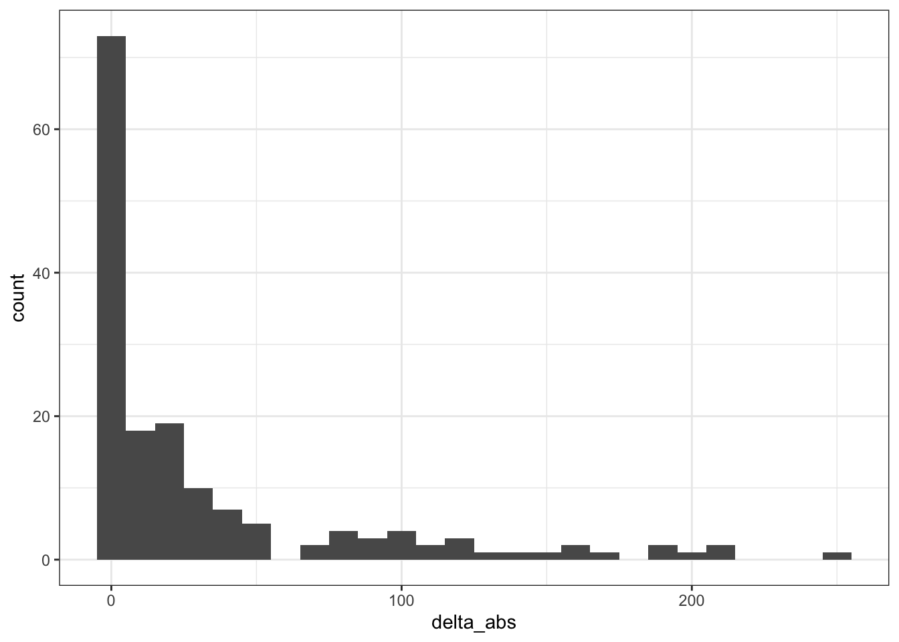

Base de dados de óbitos do Portal da Transparência do Registro Civil
Introdução
Base de dados obtida do portal da transparência do Registro Civil, de 2015 até junho de 2020.
Os dados estão em nível municipal e estadual, mês a mês. Faça o download aqui.
O código-fonte utilizado para obter os dados está disponível aqui.
IMPORTANTE: Antes de usar os dados, faça as verificações estatísticas e tratamentos necessários!
Tabelas disponíveis
by_city_monthly.csv: Certidões de óbito emitidas em cada cidade, mês a mês, de janeiro de 2015 até junho de 2020. Corresponde a preencher os campos “Ano”, “Mês” e “Estado” no portal do Registro Civil. Ex.: 2019, Janeiro, Todas, São Paulo.by_city_yearly.csv: Certidões de óbito emitidas em cada cidade, ano a ano, de 2015 até 2020. Corresponde a preencher os campos “Ano” e “Estado” no portal do Registro Civil. Ex.: 2019, Todos, Todas, São Paulo.by_state_monthly.csv: Certidões de óbito emitidas em cada estado brasileiro, mês a mês, de janeiro de 2015 até junho de 2020. Corresponde a preencher os campos “Ano” e “Mês” no portal do Registro Civil. Ex.: 2019, Janeiro, Todas, Todos.by_state_yearly.csv: Certidões de óbito emitidas em cada estado, ano a ano, de janeiro de 2015 até junho de 2020. Corresponde a preencher o campo “Ano” no portal. Ex.: 2018, Janeiro, Todas, Todos.
Amostras dos dados
Por cidade, mês a mês (tabela by_city_monthly)
## Warning: `group_by_()` is deprecated as of dplyr 0.7.0.
## Please use `group_by()` instead.
## See vignette('programming') for more help
## This warning is displayed once every 8 hours.
## Call `lifecycle::last_warnings()` to see where this warning was generated.Por cidade, ano a ano (tabela by_city_yearly)
Por estado, mês a mês (tabela by_state_monthly)
Por estado, ano a ano (tabela by_state_yearly)

Pré-análise dos dados
Última atualização: 2020-06-28 03:51:51
Nomes das cidades com problemas de grafia na tabela by_cities_monthly
master_table <-
ibge_data %>%
mutate(key = squash_string(
make_place_key(
Nome_Município,
Nome_UF
)
))
problem_names_c <- by_city_monthly %>%
mutate(key = squash_string(make_place_key(Cidade, Estado))) %>%
mutate(exists = key %in% master_table$key) %>%
filter(exists == FALSE)
# Pull unique values
(problem_names_c %>% pull(key) %>% unique)## [1] "brazlandia - distrito federal" "ceilandia - distrito federal"
## [3] "gama - distrito federal" "guara - distrito federal"
## [5] "nucleo bandeirantes - distrito federal" "paranoa - distrito federal"
## [7] "planaltina - distrito federal" "samambaia - distrito federal"
## [9] "sobradinho - distrito federal" "taguatinga - distrito federal"
## [11] "senador la roque - maranhao" "governador edson lobao - maranhao"
## [13] "poxoreo - mato grosso" "sao thome das letras - minas gerais"
## [15] "brasopolis - minas gerais" "santarem - paraiba"
## [17] "lagoa do itaenga - pernambuco" "iguaraci - pernambuco"
## [19] "santana do livramento - rio grande do sul" "espigao do oeste - rondonia"
## [21] "biritiba-mirim - sao paulo" "sao valerio da natividade - tocantins"
## [23] "fortaleza do tabocao - tocantins" "parati - rio de janeiro"
## [25] "olhos d'agua - minas gerais" "sem peixe - minas gerais"
## [27] "amparo da serra - minas gerais" "florinia - sao paulo"
## [29] "piranhas - amapa" "porto real do colegio - amapa"
## [31] "porto de pedras - amapa" "poco das trincheiras - amapa"
## [33] "pao de acucar - amapa" "santana do ipanema - amapa"
## [35] "sao bras - amapa" "sao jose da laje - amapa"
## [37] "taquarana - amapa" "uniao dos palmares - amapa"
## [39] "agua branca - amapa" "arapiraca - amapa"
## [41] "atalaia - amapa" "barra de sao miguel - amapa"
## [43] "belem - amapa" "canapi - amapa"
## [45] "capela - amapa" "craibas - amapa"
## [47] "dois riachos - amapa" "jacuipe - amapa"
## [49] "jaramataia - amapa" "jundia - amapa"
## [51] "junqueiro - amapa" "maceio - amapa"
## [53] "major isidoro - amapa" "maragogi - amapa"
## [55] "matriz de camaragibe - amapa" "messias - amapa"
## [57] "olho d'agua do casado - amapa" "palmeira dos indios - amapa"
## [59] "penedo - amapa" "serido - paraiba"
## [61] "graccho cardoso - sergipe" "arez - rio grande do norte"
## [63] "couto de magalhaes - tocantins" "eldorado dos carajas - para"
## [65] "santa isabel do para - para" "jequirica - bahia"
## [67] "campo de santana - paraiba"Nomes das cidades com problemas de grafia na tabela by_cities_yearly
problem_names_cs <- by_city_yearly %>%
mutate(key = squash_string(make_place_key(Cidade, Estado))) %>%
mutate(exists = key %in% master_table$key) %>%
filter(exists == FALSE)
# Pull unique values
(problem_names_cs %>% pull(key) %>% unique)## [1] "brazlandia - distrito federal" "ceilandia - distrito federal"
## [3] "gama - distrito federal" "guara - distrito federal"
## [5] "nucleo bandeirantes - distrito federal" "paranoa - distrito federal"
## [7] "planaltina - distrito federal" "samambaia - distrito federal"
## [9] "sobradinho - distrito federal" "taguatinga - distrito federal"
## [11] "senador la roque - maranhao" "governador edson lobao - maranhao"
## [13] "poxoreo - mato grosso" "sao thome das letras - minas gerais"
## [15] "sem peixe - minas gerais" "olhos d'agua - minas gerais"
## [17] "brasopolis - minas gerais" "amparo da serra - minas gerais"
## [19] "santarem - paraiba" "lagoa do itaenga - pernambuco"
## [21] "iguaraci - pernambuco" "parati - rio de janeiro"
## [23] "santana do livramento - rio grande do sul" "espigao do oeste - rondonia"
## [25] "florinia - sao paulo" "biritiba-mirim - sao paulo"
## [27] "sao valerio da natividade - tocantins" "fortaleza do tabocao - tocantins"
## [29] "serido - paraiba" "arez - rio grande do norte"
## [31] "graccho cardoso - sergipe" "couto de magalhaes - tocantins"
## [33] "santa isabel do para - para" "eldorado dos carajas - para"
## [35] "jequirica - bahia" "campo de santana - paraiba"Todos os nomes das cidades com problemas de grafia
c(pull(problem_names_c, key), pull(problem_names_cs, key)) %>% unique## [1] "brazlandia - distrito federal" "ceilandia - distrito federal"
## [3] "gama - distrito federal" "guara - distrito federal"
## [5] "nucleo bandeirantes - distrito federal" "paranoa - distrito federal"
## [7] "planaltina - distrito federal" "samambaia - distrito federal"
## [9] "sobradinho - distrito federal" "taguatinga - distrito federal"
## [11] "senador la roque - maranhao" "governador edson lobao - maranhao"
## [13] "poxoreo - mato grosso" "sao thome das letras - minas gerais"
## [15] "brasopolis - minas gerais" "santarem - paraiba"
## [17] "lagoa do itaenga - pernambuco" "iguaraci - pernambuco"
## [19] "santana do livramento - rio grande do sul" "espigao do oeste - rondonia"
## [21] "biritiba-mirim - sao paulo" "sao valerio da natividade - tocantins"
## [23] "fortaleza do tabocao - tocantins" "parati - rio de janeiro"
## [25] "olhos d'agua - minas gerais" "sem peixe - minas gerais"
## [27] "amparo da serra - minas gerais" "florinia - sao paulo"
## [29] "piranhas - amapa" "porto real do colegio - amapa"
## [31] "porto de pedras - amapa" "poco das trincheiras - amapa"
## [33] "pao de acucar - amapa" "santana do ipanema - amapa"
## [35] "sao bras - amapa" "sao jose da laje - amapa"
## [37] "taquarana - amapa" "uniao dos palmares - amapa"
## [39] "agua branca - amapa" "arapiraca - amapa"
## [41] "atalaia - amapa" "barra de sao miguel - amapa"
## [43] "belem - amapa" "canapi - amapa"
## [45] "capela - amapa" "craibas - amapa"
## [47] "dois riachos - amapa" "jacuipe - amapa"
## [49] "jaramataia - amapa" "jundia - amapa"
## [51] "junqueiro - amapa" "maceio - amapa"
## [53] "major isidoro - amapa" "maragogi - amapa"
## [55] "matriz de camaragibe - amapa" "messias - amapa"
## [57] "olho d'agua do casado - amapa" "palmeira dos indios - amapa"
## [59] "penedo - amapa" "serido - paraiba"
## [61] "graccho cardoso - sergipe" "arez - rio grande do norte"
## [63] "couto de magalhaes - tocantins" "eldorado dos carajas - para"
## [65] "santa isabel do para - para" "jequirica - bahia"
## [67] "campo de santana - paraiba"list_df <- list(city_monthly_table = by_city_monthly,
cities_yearly_table = by_city_yearly,
states_monthly_table = by_state_monthly,
states_yearly_table = by_state_yearly)
summary <- list_df %>%
map(. %>%
group_by(Ano, Estado) %>%
summarise(Registros = sum(Registros))
)## `summarise()` regrouping output by 'Ano' (override with `.groups` argument)
## `summarise()` regrouping output by 'Ano' (override with `.groups` argument)
## `summarise()` regrouping output by 'Ano' (override with `.groups` argument)
## `summarise()` regrouping output by 'Ano' (override with `.groups` argument) for (i in seq_along(summary)) {
summary[[i]]$table <- rep(names(summary[i]), nrow(summary[[i]]))
}
summary %>%
bind_rows %>%
pivot_wider(names_from = table, values_from = Registros)## # A tibble: 162 x 6
## # Groups: Ano [6]
## Ano Estado city_monthly_table cities_yearly_table states_monthly_table states_yearly_table
## <dbl> <chr> <dbl> <dbl> <dbl> <dbl>
## 1 2015 Acre 2526 2526 2526 2526
## 2 2015 Alagoas 7765 7765 7765 7765
## 3 2015 Amapá 2712 2144 2144 2144
## 4 2015 Amazonas 2909 2909 2909 2909
## 5 2015 Bahia 31705 31705 31705 31705
## 6 2015 Ceará 8622 8622 8622 8622
## 7 2015 Distrito Federal 13906 13906 13906 13906
## 8 2015 Espírito Santo 22563 22563 22563 22563
## 9 2015 Goiás 23927 23927 23927 23927
## 10 2015 Maranhão 2082 2082 2082 2082
## # … with 152 more rowsSomas dos registros nas tabelas
Tabela by_city_monthly
ca <- yearly_aggregate(by_city_monthly)## `summarise()` ungrouping output (override with `.groups` argument)DT::datatable(ca)Tabela by_city_yearly
csa <- yearly_aggregate(by_city_yearly)## `summarise()` ungrouping output (override with `.groups` argument)DT::datatable(csa)Tabela by_state_monthly
sa <- yearly_aggregate(by_state_monthly)## `summarise()` ungrouping output (override with `.groups` argument)DT::datatable(sa)Tabela by_state_monthly
ssa <- yearly_aggregate(by_state_yearly)## `summarise()` ungrouping output (override with `.groups` argument)DT::datatable(ssa)Comparação entre tabelas
bind_rows("cities_monthly" = ca,
"cities_yearly" = csa,
"states_monthly" = sa,
"states_yearly" = ssa,
.id = "origin_table") %>%
pivot_wider(names_from = origin_table, values_from = Registros) %>%
DT::datatable()Tabela by_city_monthly vs by_city_yearly
cma <- by_city_monthly %>%
group_by(Estado, Ano) %>%
summarise(Registros = sum(Registros))## `summarise()` regrouping output by 'Estado' (override with `.groups` argument)cysa <- by_city_yearly %>%
select(Cidade, Estado, Ano, Registros) %>%
group_by(Estado, Ano) %>%
summarise(Registros = sum(Registros))## `summarise()` regrouping output by 'Estado' (override with `.groups` argument)combined_cities <-
bind_rows("cities" = cma, "cities_summary" = cysa, .id = "origin_table") %>%
pivot_wider(names_from = origin_table, values_from = Registros) %>%
mutate(delta_abs = abs(cities_summary - cities))
summary(combined_cities)## Estado Ano cities cities_summary delta_abs
## Length:162 Min. :2015 Min. : 881 Min. : 881 Min. : 0.00
## Class :character 1st Qu.:2016 1st Qu.: 7111 1st Qu.: 7111 1st Qu.: 0.00
## Mode :character Median :2018 Median : 14974 Median : 14974 Median : 0.00
## Mean :2018 Mean : 35189 Mean : 35203 Mean : 21.12
## 3rd Qu.:2019 3rd Qu.: 36142 3rd Qu.: 36234 3rd Qu.: 0.00
## Max. :2020 Max. :311777 Max. :311777 Max. :1376.00combined_cities %>%
filter(delta_abs != 0) %>%
arrange(-delta_abs) %>%
DT::datatable()ggplot(combined_cities) + geom_histogram(aes(delta_abs), binwidth = 10)
Tabela by_state_monthly vs by_state_yearly
sma <- by_state_monthly %>%
group_by(Estado, Ano) %>%
summarise(Registros = sum(Registros))## `summarise()` regrouping output by 'Estado' (override with `.groups` argument)sysa <- by_state_yearly %>%
select(Estado, Ano, Registros)
combined_states <-
bind_rows("states" = sma, "states_summary" = sysa, .id = "origin_table") %>%
pivot_wider(names_from = origin_table, values_from = Registros) %>%
mutate(delta_abs = abs(states_summary - states))
summary(combined_states)## Estado Ano states states_summary delta_abs
## Length:162 Min. :2015 Min. : 881 Min. : 881 Min. : 0.00
## Class :character 1st Qu.:2016 1st Qu.: 7111 1st Qu.: 7111 1st Qu.: 0.00
## Mode :character Median :2018 Median : 14974 Median : 14974 Median : 0.00
## Mean :2018 Mean : 35173 Mean : 35203 Mean : 29.32
## 3rd Qu.:2019 3rd Qu.: 36212 3rd Qu.: 36234 3rd Qu.: 0.00
## Max. :2020 Max. :311777 Max. :311777 Max. :1024.00combined_states %>%
filter(delta_abs != 0) %>%
arrange(-delta_abs) %>%
DT::datatable()ggplot(combined_states) + geom_histogram(aes(delta_abs), binwidth = 10)